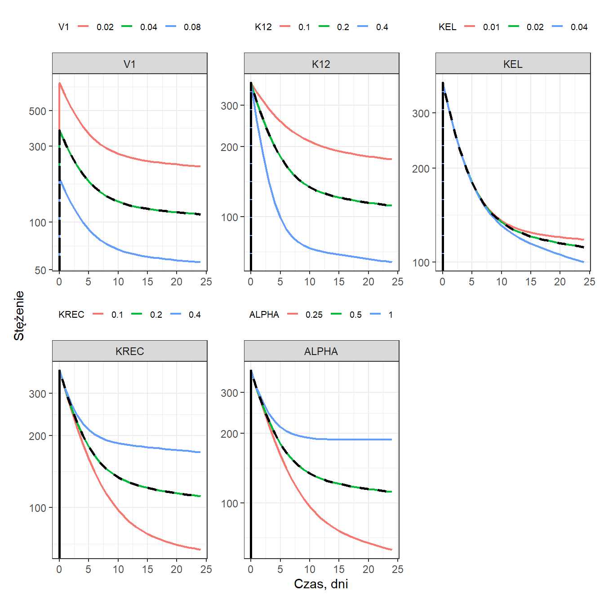

Code
library(mrgsolve)
library(dplyr)
library(ggplot2)
library(mrgsim.sa)
# select<-dplyr::select
# filter<-dplyr::filter
set.seed(10271998) library(mrgsolve)
library(dplyr)
library(ggplot2)
library(mrgsim.sa)
# select<-dplyr::select
# filter<-dplyr::filter
set.seed(10271998) code3 <- '
#
$PARAM V1=0.04, K12=0.2, KEL=0.02, KREC=0.2, ALPHA=0.5
$CMT A1 Atot
$MAIN
$ODE
dxdt_A1 = -K12 * A1 + KREC * ALPHA * Atot;
dxdt_Atot = K12 * A1 - (KREC * ALPHA + KEL * (1-ALPHA)) * Atot;
$TABLE
double C1 = A1 / V1;
$capture C1;
'
mod3 <- mcode("modelQEred1", code3)
out5 <-
mod3 %>%
ev(amt = 15) %>%
select_par(V1, K12, KEL, KREC, ALPHA) %>%
parseq_fct(.n = 3, .geo = TRUE) %>%
sens_each()
sens_plot(out5, "C1", grid = TRUE, logy = T, ylab = "Stężenie", xlab = "Czas, dni", palette = ggplot2::scale_color_discrete()) +
patchwork::plot_layout(axis_titles = "collect") &
theme(
legend.text = element_text(size = 7),
legend.title = element_text(size = 8),
legend.key.size = unit(0.4, "cm")
)
sessionInfo()R version 4.3.1 (2023-06-16 ucrt)
Platform: x86_64-w64-mingw32/x64 (64-bit)
Running under: Windows 11 x64 (build 26200)
Matrix products: default
locale:
[1] LC_COLLATE=Polish_Poland.utf8 LC_CTYPE=Polish_Poland.utf8
[3] LC_MONETARY=Polish_Poland.utf8 LC_NUMERIC=C
[5] LC_TIME=Polish_Poland.utf8
time zone: Europe/Warsaw
tzcode source: internal
attached base packages:
[1] stats graphics grDevices utils datasets methods base
other attached packages:
[1] mrgsim.sa_0.3.0 ggplot2_4.0.2 dplyr_1.1.4 mrgsolve_1.7.2
loaded via a namespace (and not attached):
[1] gtable_0.3.6 jsonlite_2.0.0 compiler_4.3.1 tidyselect_1.2.1
[5] Rcpp_1.1.1 assertthat_0.2.1 tidyr_1.3.2 scales_1.4.0
[9] yaml_2.3.12 fastmap_1.2.0 lattice_0.21-8 R6_2.5.1
[13] labeling_0.4.3 generics_0.1.3 patchwork_1.3.2 knitr_1.51
[17] tibble_3.2.1 pillar_1.9.0 RColorBrewer_1.1-3 rlang_1.1.3
[21] utf8_1.2.4 xfun_0.56 S7_0.2.1 cli_3.6.2
[25] withr_3.0.0 magrittr_2.0.3 digest_0.6.39 grid_4.3.1
[29] rstudioapi_0.18.0 lifecycle_1.0.4 vctrs_0.6.5 evaluate_1.0.5
[33] glue_1.7.0 farver_2.1.2 fansi_1.0.6 rmarkdown_2.30
[37] purrr_1.2.1 tools_4.3.1 pkgconfig_2.0.3 htmltools_0.5.9